-
In order to remember the things I want to do, as a ToDo MVC user, I want to manage my todo list
12:19:22 PM / 31:30:826 Pass
In order to remember the things I want to do, as a ToDo MVC user, I want to manage my todo list
10.07.2021 12:19:22 10.07.2021 12:20:53 31:30:826 · #test-id=1@TodoFeaturePass1 To validate user is able to add the tasks to the list and able to validate number items added and same are showing under All and Active filtersPass1 To validate user is able to add the tasks to the list and able to validate number items added and same are showing under All and Active filtersGiven Browser is launched and todos web URL is enteredstepDefinations.stepDefination.addScreenshot(io.cucumber.java.Scenario) When user enters all the tasks "Checking emails,Attending morning meetings,Focusing on priority tasks,Attending afternoon meetings,Sending daily status email" in the text box and hit enter one after the otherstepDefinations.stepDefination.addScreenshot(io.cucumber.java.Scenario)Then All the tasks "Checking emails,Attending morning meetings,Focusing on priority tasks,Attending afternoon meetings,Sending daily status email" should be added as list under All tabstepDefinations.stepDefination.addScreenshot(io.cucumber.java.Scenario)
When user enters all the tasks "Checking emails,Attending morning meetings,Focusing on priority tasks,Attending afternoon meetings,Sending daily status email" in the text box and hit enter one after the otherstepDefinations.stepDefination.addScreenshot(io.cucumber.java.Scenario)Then All the tasks "Checking emails,Attending morning meetings,Focusing on priority tasks,Attending afternoon meetings,Sending daily status email" should be added as list under All tabstepDefinations.stepDefination.addScreenshot(io.cucumber.java.Scenario) And user validates numbers tasks "5 items left" added to the liststepDefinations.stepDefination.addScreenshot(io.cucumber.java.Scenario)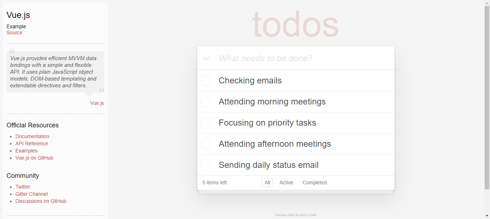And user clicks on Active tab and ensure all the tasks "Checking emails,Attending morning meetings,Focusing on priority tasks,Attending afternoon meetings,Sending daily status email" are showingstepDefinations.stepDefination.addScreenshot(io.cucumber.java.Scenario)
And user validates numbers tasks "5 items left" added to the liststepDefinations.stepDefination.addScreenshot(io.cucumber.java.Scenario)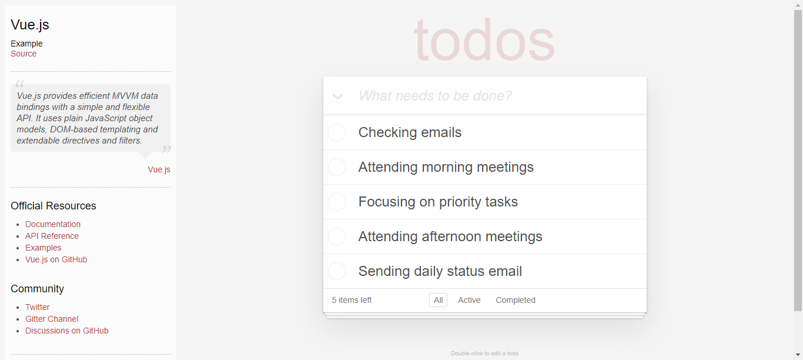And user clicks on Active tab and ensure all the tasks "Checking emails,Attending morning meetings,Focusing on priority tasks,Attending afternoon meetings,Sending daily status email" are showingstepDefinations.stepDefination.addScreenshot(io.cucumber.java.Scenario) And user clicks on Completed tab and ensure no tasks are showingstepDefinations.stepDefination.addScreenshot(io.cucumber.java.Scenario)Pass2 To validate user is able to make the tasks as completed and tasks left under All filter should be updated accordingly and Completed tasks should be moved to Completed filter and shouldnot display under Active tabPass2 To validate user is able to make the tasks as completed and tasks left under All filter should be updated accordingly and Completed tasks should be moved to Completed filter and shouldnot display under Active tabGiven Browser is launched and todos web URL is enteredstepDefinations.stepDefination.addScreenshot(io.cucumber.java.Scenario)
And user clicks on Completed tab and ensure no tasks are showingstepDefinations.stepDefination.addScreenshot(io.cucumber.java.Scenario)Pass2 To validate user is able to make the tasks as completed and tasks left under All filter should be updated accordingly and Completed tasks should be moved to Completed filter and shouldnot display under Active tabPass2 To validate user is able to make the tasks as completed and tasks left under All filter should be updated accordingly and Completed tasks should be moved to Completed filter and shouldnot display under Active tabGiven Browser is launched and todos web URL is enteredstepDefinations.stepDefination.addScreenshot(io.cucumber.java.Scenario) When user enters all the tasks "Checking emails,Attending morning meetings,Focusing on priority tasks,Attending afternoon meetings,Sending daily status email" in the text box and hit enter one after the otherstepDefinations.stepDefination.addScreenshot(io.cucumber.java.Scenario)
When user enters all the tasks "Checking emails,Attending morning meetings,Focusing on priority tasks,Attending afternoon meetings,Sending daily status email" in the text box and hit enter one after the otherstepDefinations.stepDefination.addScreenshot(io.cucumber.java.Scenario) And user clicks on check box for "Checking emails" task in order to complete itstepDefinations.stepDefination.addScreenshot(io.cucumber.java.Scenario)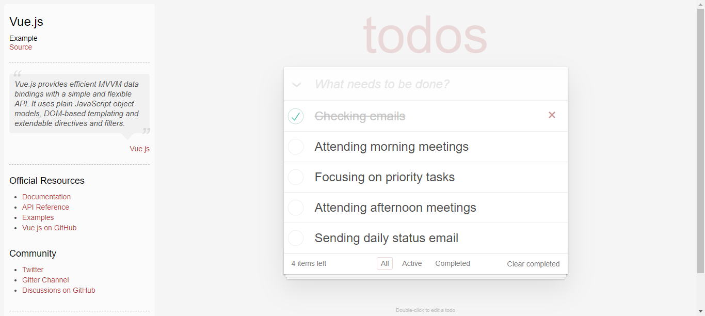Then user validates "Checking emails" task turned to completed and number of tasks left should become "4 items left" under All tabstepDefinations.stepDefination.addScreenshot(io.cucumber.java.Scenario)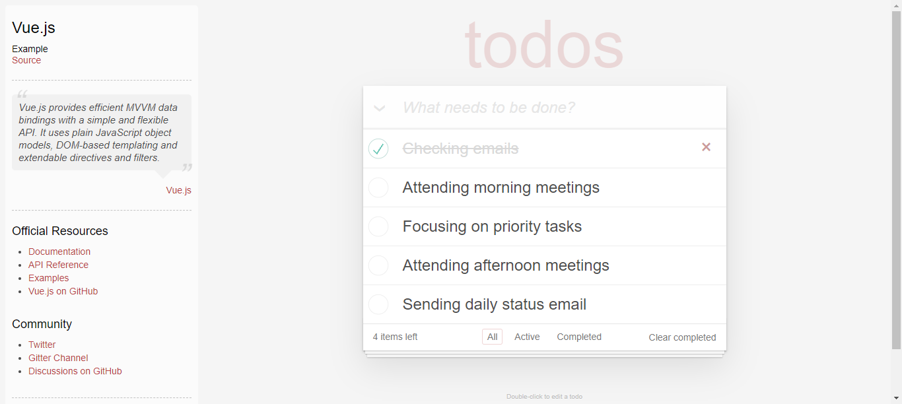And user clicks on Active tab and ensure all the tasks "Attending morning meetings,Focusing on priority tasks,Attending afternoon meetings,Sending daily status email" should be displaying except "Checking emails" taskstepDefinations.stepDefination.addScreenshot(io.cucumber.java.Scenario)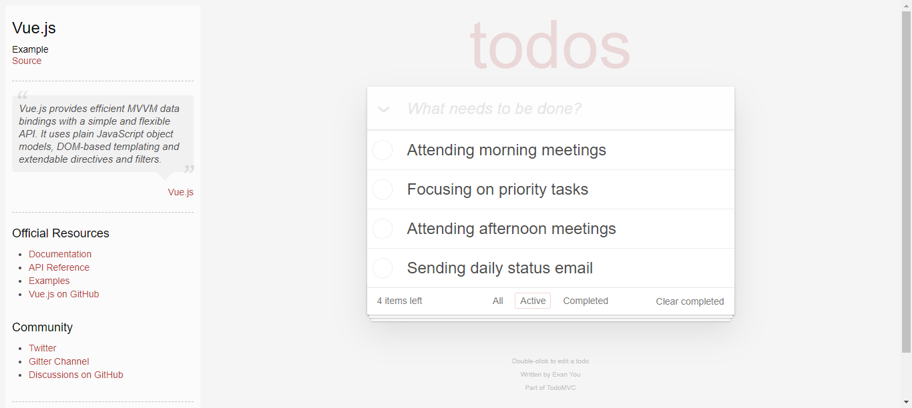And user clicks on Completed tab and ensure "Checking emails" task is displayingstepDefinations.stepDefination.addScreenshot(io.cucumber.java.Scenario)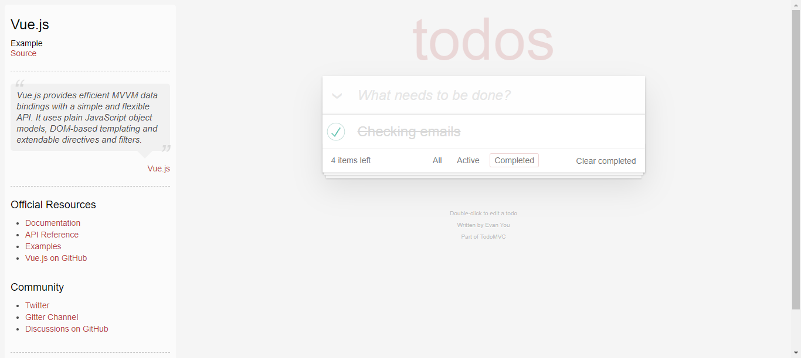Pass3 To validate user is able to make the tasks as incompleted and tasks left under All filter should be updated accordingly and tasks under Completed tab should be removed and all tasks which are not completed should be displayed under Active tabPass3 To validate user is able to make the tasks as incompleted and tasks left under All filter should be updated accordingly and tasks under Completed tab should be removed and all tasks which are not completed should be displayed under Active tabGiven Browser is launched and todos web URL is enteredstepDefinations.stepDefination.addScreenshot(io.cucumber.java.Scenario)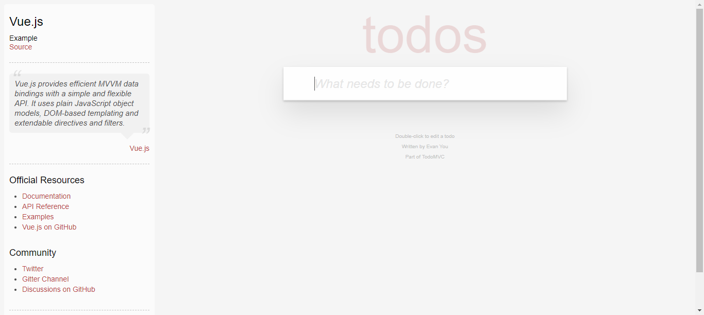When user enters all the tasks "Checking emails,Attending morning meetings,Focusing on priority tasks,Attending afternoon meetings,Sending daily status email" in the text box and hit enter one after the otherstepDefinations.stepDefination.addScreenshot(io.cucumber.java.Scenario)
And user clicks on check box for "Checking emails" task in order to complete itstepDefinations.stepDefination.addScreenshot(io.cucumber.java.Scenario)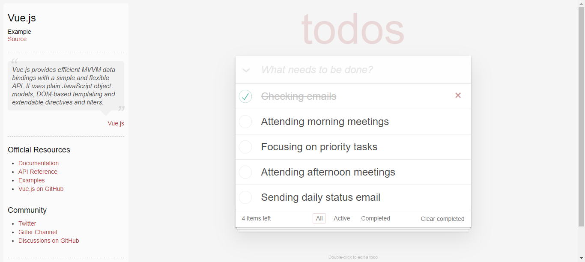Then user validates "Checking emails" task turned to completed and number of tasks left should become "4 items left" under All tabstepDefinations.stepDefination.addScreenshot(io.cucumber.java.Scenario)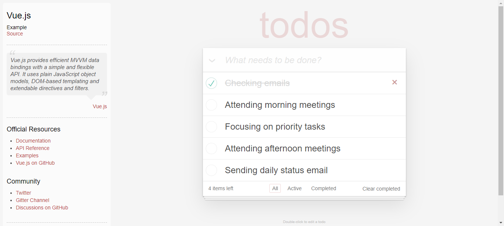And user clicks on Active tab and ensure all the tasks "Attending morning meetings,Focusing on priority tasks,Attending afternoon meetings,Sending daily status email" should be displaying except "Checking emails" taskstepDefinations.stepDefination.addScreenshot(io.cucumber.java.Scenario)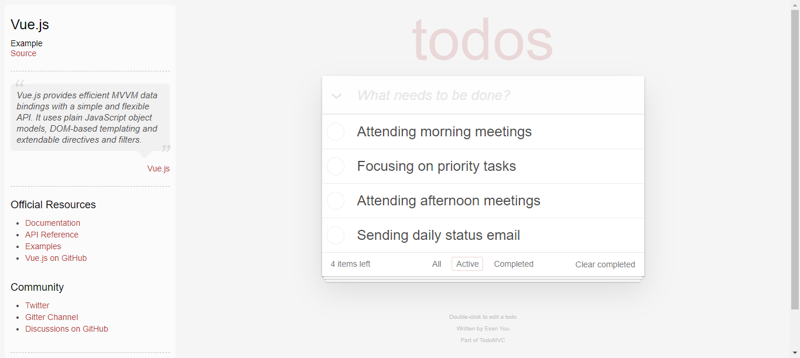And user clicks on Completed tab and ensure "Checking emails" task is displayingstepDefinations.stepDefination.addScreenshot(io.cucumber.java.Scenario)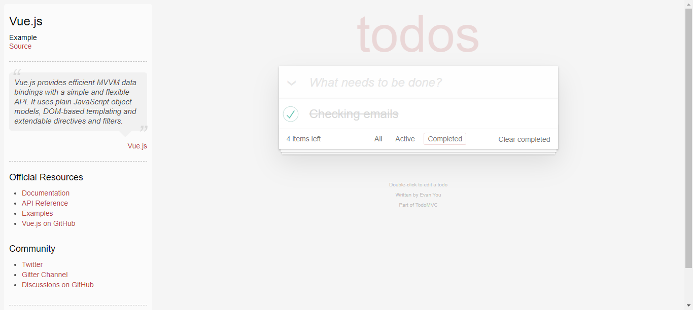Pass3 To validate user is able to make the tasks as incompleted and tasks left under All filter should be updated accordingly and tasks under Completed tab should be removed and all tasks which are not completed should be displayed under Active tabPass3 To validate user is able to make the tasks as incompleted and tasks left under All filter should be updated accordingly and tasks under Completed tab should be removed and all tasks which are not completed should be displayed under Active tabGiven Browser is launched and todos web URL is enteredstepDefinations.stepDefination.addScreenshot(io.cucumber.java.Scenario)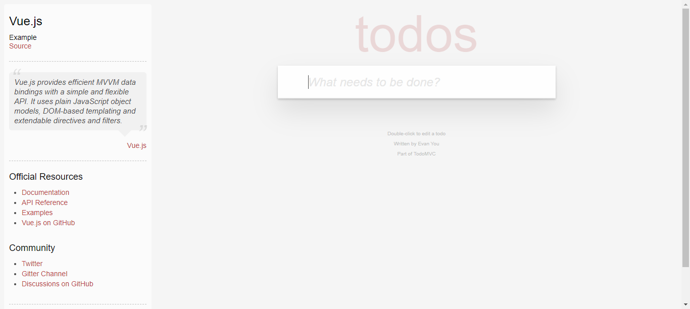When user enters all the tasks "Checking emails,Attending morning meetings,Focusing on priority tasks,Attending afternoon meetings,Sending daily status email" in the text box and hit enter one after the otherstepDefinations.stepDefination.addScreenshot(io.cucumber.java.Scenario) And user clicks on check box for "Checking emails" task in order to complete itstepDefinations.stepDefination.addScreenshot(io.cucumber.java.Scenario)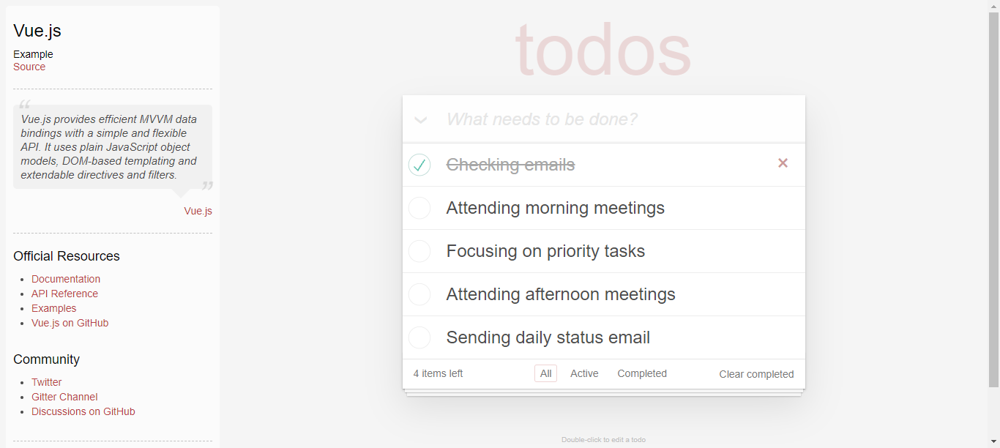Then user validates "Checking emails" task turned to completed and number of tasks left should become "4 items left" under All tabstepDefinations.stepDefination.addScreenshot(io.cucumber.java.Scenario)And user clicks on check box for "Checking emails" task in order to incomplete itstepDefinations.stepDefination.addScreenshot(io.cucumber.java.Scenario)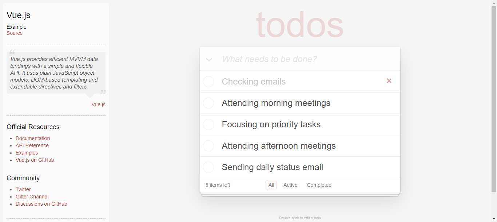And user validates numbers tasks "5 items left" added to the liststepDefinations.stepDefination.addScreenshot(io.cucumber.java.Scenario)And user clicks on Active tab and ensure all the tasks "Checking emails,Attending morning meetings,Focusing on priority tasks,Attending afternoon meetings,Sending daily status email" are showingstepDefinations.stepDefination.addScreenshot(io.cucumber.java.Scenario)And user clicks on Completed tab and ensure no tasks are showingstepDefinations.stepDefination.addScreenshot(io.cucumber.java.Scenario)
And user clicks on check box for "Checking emails" task in order to complete itstepDefinations.stepDefination.addScreenshot(io.cucumber.java.Scenario)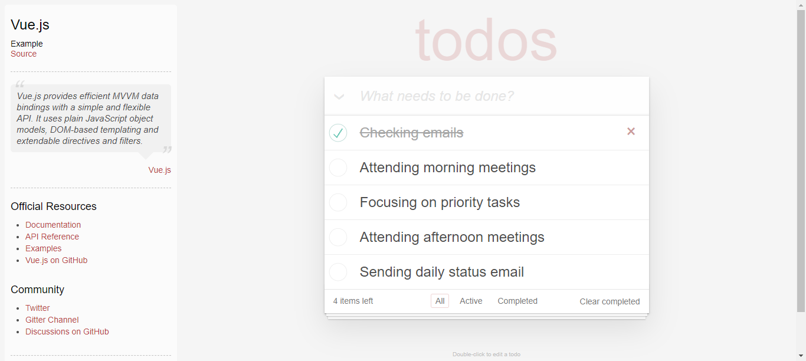Then user validates "Checking emails" task turned to completed and number of tasks left should become "4 items left" under All tabstepDefinations.stepDefination.addScreenshot(io.cucumber.java.Scenario)And user clicks on check box for "Checking emails" task in order to incomplete itstepDefinations.stepDefination.addScreenshot(io.cucumber.java.Scenario)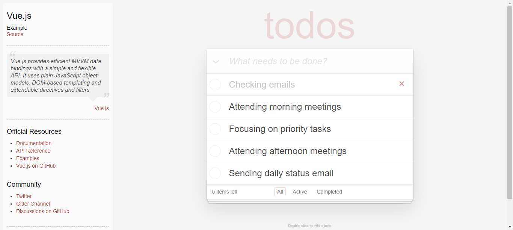And user validates numbers tasks "5 items left" added to the liststepDefinations.stepDefination.addScreenshot(io.cucumber.java.Scenario)And user clicks on Active tab and ensure all the tasks "Checking emails,Attending morning meetings,Focusing on priority tasks,Attending afternoon meetings,Sending daily status email" are showingstepDefinations.stepDefination.addScreenshot(io.cucumber.java.Scenario)And user clicks on Completed tab and ensure no tasks are showingstepDefinations.stepDefination.addScreenshot(io.cucumber.java.Scenario) Pass4 To validate user is able to clear the completed tasks and same shouldnot be displayed under Completed tabPass4 To validate user is able to clear the completed tasks and same shouldnot be displayed under Completed tabGiven Browser is launched and todos web URL is enteredstepDefinations.stepDefination.addScreenshot(io.cucumber.java.Scenario)When user enters all the tasks "Checking emails,Attending morning meetings,Focusing on priority tasks,Attending afternoon meetings,Sending daily status email" in the text box and hit enter one after the otherstepDefinations.stepDefination.addScreenshot(io.cucumber.java.Scenario)
Pass4 To validate user is able to clear the completed tasks and same shouldnot be displayed under Completed tabPass4 To validate user is able to clear the completed tasks and same shouldnot be displayed under Completed tabGiven Browser is launched and todos web URL is enteredstepDefinations.stepDefination.addScreenshot(io.cucumber.java.Scenario)When user enters all the tasks "Checking emails,Attending morning meetings,Focusing on priority tasks,Attending afternoon meetings,Sending daily status email" in the text box and hit enter one after the otherstepDefinations.stepDefination.addScreenshot(io.cucumber.java.Scenario) And user clicks on check box for "Checking emails" task in order to complete itstepDefinations.stepDefination.addScreenshot(io.cucumber.java.Scenario)And user clicks on Clear completed optionstepDefinations.stepDefination.addScreenshot(io.cucumber.java.Scenario)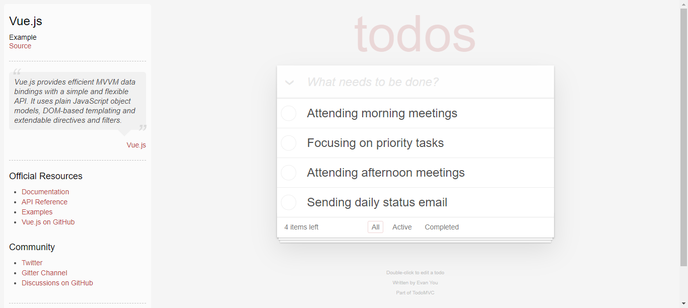Then user clicks on Completed tab and ensure no tasks are showingstepDefinations.stepDefination.addScreenshot(io.cucumber.java.Scenario)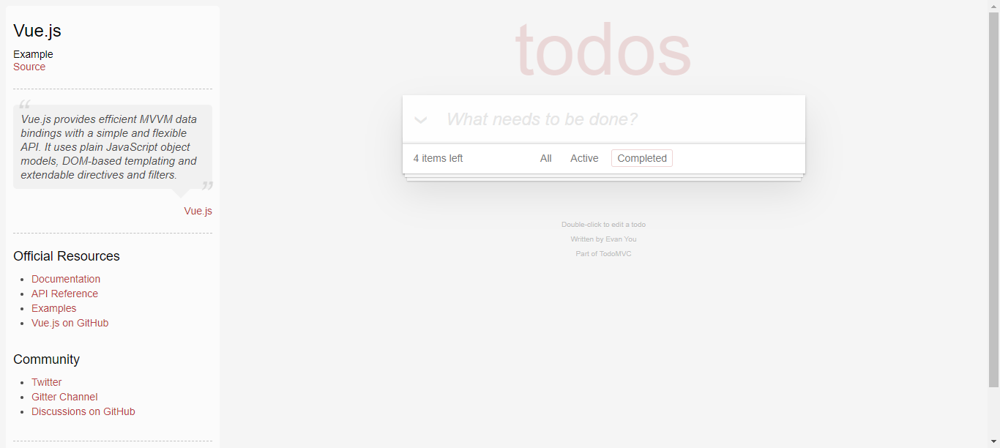Pass5 To validate user is able to make all the tasks as completed and incompleted and tasks left under All filter should be updated accordinglyPass5 To validate user is able to make all the tasks as completed and incompleted and tasks left under All filter should be updated accordinglyGiven Browser is launched and todos web URL is enteredstepDefinations.stepDefination.addScreenshot(io.cucumber.java.Scenario)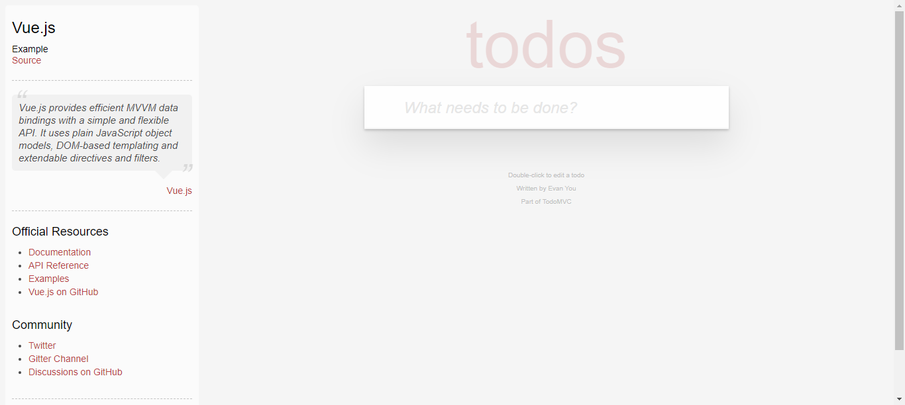When user enters all the tasks "Checking emails,Attending morning meetings,Focusing on priority tasks,Attending afternoon meetings,Sending daily status email" in the text box and hit enter one after the otherstepDefinations.stepDefination.addScreenshot(io.cucumber.java.Scenario)
And user clicks on check box for "Checking emails" task in order to complete itstepDefinations.stepDefination.addScreenshot(io.cucumber.java.Scenario)And user clicks on Clear completed optionstepDefinations.stepDefination.addScreenshot(io.cucumber.java.Scenario)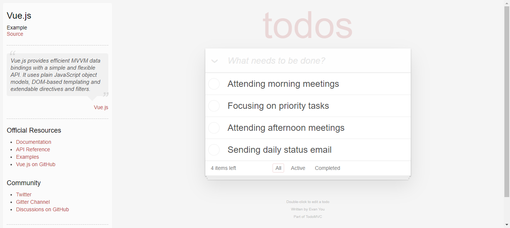Then user clicks on Completed tab and ensure no tasks are showingstepDefinations.stepDefination.addScreenshot(io.cucumber.java.Scenario)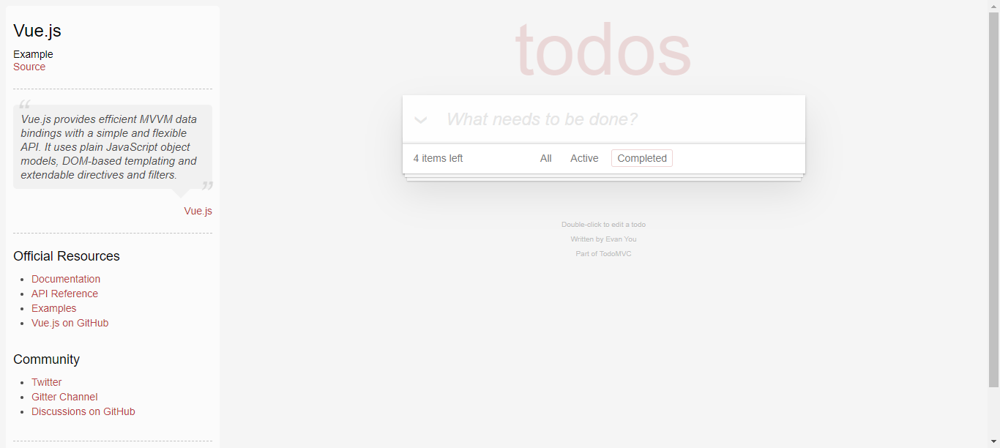Pass5 To validate user is able to make all the tasks as completed and incompleted and tasks left under All filter should be updated accordinglyPass5 To validate user is able to make all the tasks as completed and incompleted and tasks left under All filter should be updated accordinglyGiven Browser is launched and todos web URL is enteredstepDefinations.stepDefination.addScreenshot(io.cucumber.java.Scenario)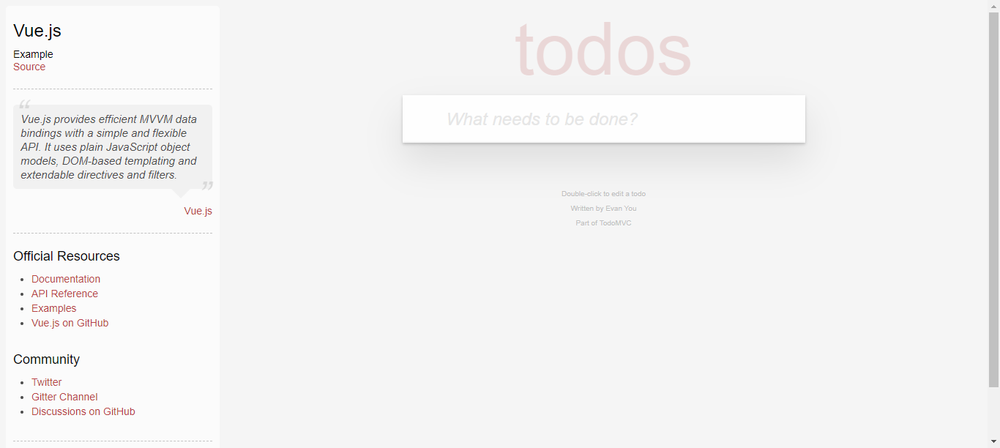When user enters all the tasks "Checking emails,Attending morning meetings,Focusing on priority tasks,Attending afternoon meetings,Sending daily status email" in the text box and hit enter one after the otherstepDefinations.stepDefination.addScreenshot(io.cucumber.java.Scenario) And user clicks on select all check box in order to complete all the tasksstepDefinations.stepDefination.addScreenshot(io.cucumber.java.Scenario)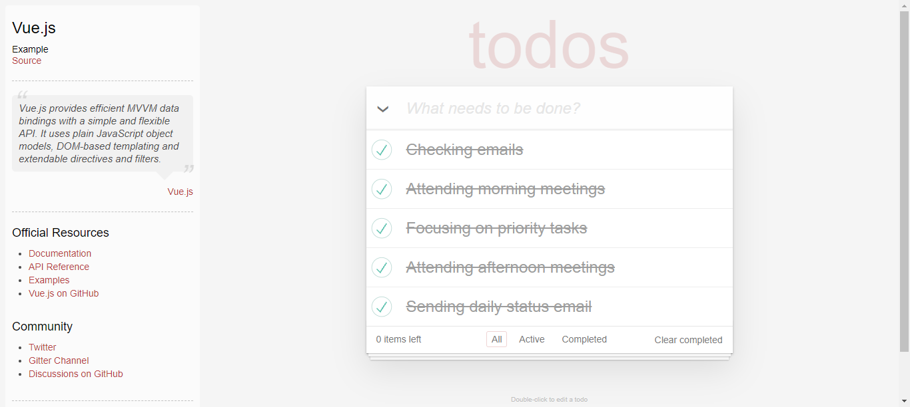Then user validates "Checking emails,Attending morning meetings,Focusing on priority tasks,Attending afternoon meetings,Sending daily status email" tasks turned to completed and number of tasks left should become "0 items left" under All tabstepDefinations.stepDefination.addScreenshot(io.cucumber.java.Scenario)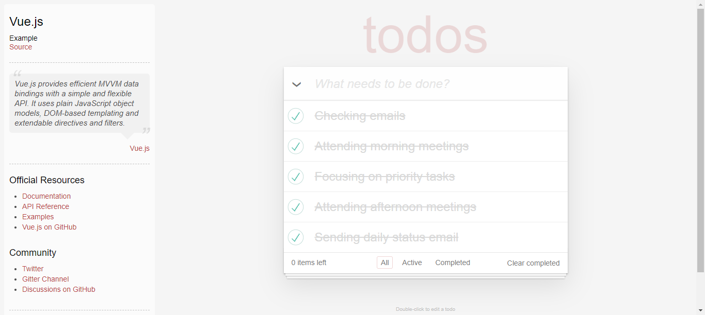And user clicks on Completed tab and ensure "Checking emails,Attending morning meetings,Focusing on priority tasks,Attending afternoon meetings,Sending daily status email" tasks are displayingstepDefinations.stepDefination.addScreenshot(io.cucumber.java.Scenario)And user clicks on All tab and select all check box in order to incomplete all the tasksstepDefinations.stepDefination.addScreenshot(io.cucumber.java.Scenario)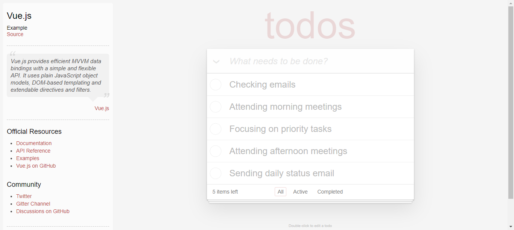And user validates numbers tasks "5 items left" added to the liststepDefinations.stepDefination.addScreenshot(io.cucumber.java.Scenario)And user clicks on Active tab and ensure all the tasks "Checking emails,Attending morning meetings,Focusing on priority tasks,Attending afternoon meetings,Sending daily status email" are showingstepDefinations.stepDefination.addScreenshot(io.cucumber.java.Scenario)And user clicks on Completed tab and ensure no tasks are showingstepDefinations.stepDefination.addScreenshot(io.cucumber.java.Scenario)Pass6 To validate user is able to remove all the tasks by clicking on the cross markPass6 To validate user is able to remove all the tasks by clicking on the cross markGiven Browser is launched and todos web URL is enteredstepDefinations.stepDefination.addScreenshot(io.cucumber.java.Scenario)
And user clicks on select all check box in order to complete all the tasksstepDefinations.stepDefination.addScreenshot(io.cucumber.java.Scenario)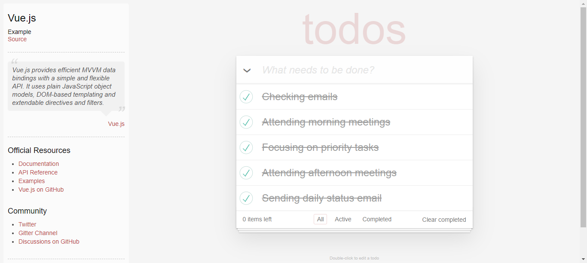Then user validates "Checking emails,Attending morning meetings,Focusing on priority tasks,Attending afternoon meetings,Sending daily status email" tasks turned to completed and number of tasks left should become "0 items left" under All tabstepDefinations.stepDefination.addScreenshot(io.cucumber.java.Scenario)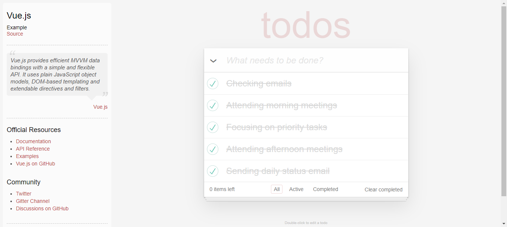And user clicks on Completed tab and ensure "Checking emails,Attending morning meetings,Focusing on priority tasks,Attending afternoon meetings,Sending daily status email" tasks are displayingstepDefinations.stepDefination.addScreenshot(io.cucumber.java.Scenario)And user clicks on All tab and select all check box in order to incomplete all the tasksstepDefinations.stepDefination.addScreenshot(io.cucumber.java.Scenario)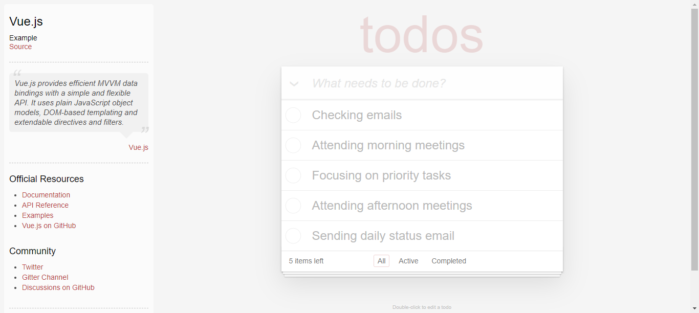And user validates numbers tasks "5 items left" added to the liststepDefinations.stepDefination.addScreenshot(io.cucumber.java.Scenario)And user clicks on Active tab and ensure all the tasks "Checking emails,Attending morning meetings,Focusing on priority tasks,Attending afternoon meetings,Sending daily status email" are showingstepDefinations.stepDefination.addScreenshot(io.cucumber.java.Scenario)And user clicks on Completed tab and ensure no tasks are showingstepDefinations.stepDefination.addScreenshot(io.cucumber.java.Scenario)Pass6 To validate user is able to remove all the tasks by clicking on the cross markPass6 To validate user is able to remove all the tasks by clicking on the cross markGiven Browser is launched and todos web URL is enteredstepDefinations.stepDefination.addScreenshot(io.cucumber.java.Scenario) When user enters all the tasks "Checking emails,Attending morning meetings,Focusing on priority tasks,Attending afternoon meetings,Sending daily status email" in the text box and hit enter one after the otherstepDefinations.stepDefination.addScreenshot(io.cucumber.java.Scenario)
When user enters all the tasks "Checking emails,Attending morning meetings,Focusing on priority tasks,Attending afternoon meetings,Sending daily status email" in the text box and hit enter one after the otherstepDefinations.stepDefination.addScreenshot(io.cucumber.java.Scenario) And user validates numbers tasks "5 items left" added to the liststepDefinations.stepDefination.addScreenshot(io.cucumber.java.Scenario)And user clicks on cross mark beside each taskstepDefinations.stepDefination.addScreenshot(io.cucumber.java.Scenario)Then All the tasks should be removed under All tabstepDefinations.stepDefination.addScreenshot(io.cucumber.java.Scenario)
And user validates numbers tasks "5 items left" added to the liststepDefinations.stepDefination.addScreenshot(io.cucumber.java.Scenario)And user clicks on cross mark beside each taskstepDefinations.stepDefination.addScreenshot(io.cucumber.java.Scenario)Then All the tasks should be removed under All tabstepDefinations.stepDefination.addScreenshot(io.cucumber.java.Scenario)
-
@InCompleteTasks
2 tests
@InCompleteTasks
2 passedStatus Timestamp TestName Pass 12:19:46 PM 3 To validate user is able to make the tasks as incompleted and tasks left under All filter should be updated accordingly and tasks under Completed tab should be removed and all tasks which are not completed should be displayed under Active tab In order to remember the things I want to do, as a ToDo MVC user, I want to manage my todo list.3 To validate user is able to make the tasks as incompleted and tasks left under All filter should be updated accordingly and tasks under Completed tab should be removed and all tasks which are not completed should be displayed under Active tabPass 12:19:46 PM 3 To validate user is able to make the tasks as incompleted and tasks left under All filter should be updated accordingly and tasks under Completed tab should be removed and all tasks which are not completed should be displayed under Active tab In order to remember the things I want to do, as a ToDo MVC user, I want to manage my todo list.3 To validate user is able to make the tasks as incompleted and tasks left under All filter should be updated accordingly and tasks under Completed tab should be removed and all tasks which are not completed should be displayed under Active tab -
@AddTasks
2 tests
@AddTasks
2 passedStatus Timestamp TestName Pass 12:19:22 PM 1 To validate user is able to add the tasks to the list and able to validate number items added and same are showing under All and Active filters In order to remember the things I want to do, as a ToDo MVC user, I want to manage my todo list.1 To validate user is able to add the tasks to the list and able to validate number items added and same are showing under All and Active filtersPass 12:19:22 PM 1 To validate user is able to add the tasks to the list and able to validate number items added and same are showing under All and Active filters In order to remember the things I want to do, as a ToDo MVC user, I want to manage my todo list.1 To validate user is able to add the tasks to the list and able to validate number items added and same are showing under All and Active filters -
@TodoFeature
7 tests
@TodoFeature
7 passedStatus Timestamp TestName Pass 12:19:22 PM In order to remember the things I want to do, as a ToDo MVC user, I want to manage my todo list Pass 12:19:22 PM 1 To validate user is able to add the tasks to the list and able to validate number items added and same are showing under All and Active filters In order to remember the things I want to do, as a ToDo MVC user, I want to manage my todo list.1 To validate user is able to add the tasks to the list and able to validate number items added and same are showing under All and Active filtersPass 12:19:40 PM 2 To validate user is able to make the tasks as completed and tasks left under All filter should be updated accordingly and Completed tasks should be moved to Completed filter and shouldnot display under Active tab In order to remember the things I want to do, as a ToDo MVC user, I want to manage my todo list.2 To validate user is able to make the tasks as completed and tasks left under All filter should be updated accordingly and Completed tasks should be moved to Completed filter and shouldnot display under Active tabPass 12:19:46 PM 3 To validate user is able to make the tasks as incompleted and tasks left under All filter should be updated accordingly and tasks under Completed tab should be removed and all tasks which are not completed should be displayed under Active tab In order to remember the things I want to do, as a ToDo MVC user, I want to manage my todo list.3 To validate user is able to make the tasks as incompleted and tasks left under All filter should be updated accordingly and tasks under Completed tab should be removed and all tasks which are not completed should be displayed under Active tabPass 12:20:04 PM 4 To validate user is able to clear the completed tasks and same shouldnot be displayed under Completed tab In order to remember the things I want to do, as a ToDo MVC user, I want to manage my todo list.4 To validate user is able to clear the completed tasks and same shouldnot be displayed under Completed tabPass 12:20:20 PM 5 To validate user is able to make all the tasks as completed and incompleted and tasks left under All filter should be updated accordingly In order to remember the things I want to do, as a ToDo MVC user, I want to manage my todo list.5 To validate user is able to make all the tasks as completed and incompleted and tasks left under All filter should be updated accordinglyPass 12:20:37 PM 6 To validate user is able to remove all the tasks by clicking on the cross mark In order to remember the things I want to do, as a ToDo MVC user, I want to manage my todo list.6 To validate user is able to remove all the tasks by clicking on the cross mark -
@CompleteTasks
2 tests
@CompleteTasks
2 passedStatus Timestamp TestName Pass 12:19:40 PM 2 To validate user is able to make the tasks as completed and tasks left under All filter should be updated accordingly and Completed tasks should be moved to Completed filter and shouldnot display under Active tab In order to remember the things I want to do, as a ToDo MVC user, I want to manage my todo list.2 To validate user is able to make the tasks as completed and tasks left under All filter should be updated accordingly and Completed tasks should be moved to Completed filter and shouldnot display under Active tabPass 12:19:40 PM 2 To validate user is able to make the tasks as completed and tasks left under All filter should be updated accordingly and Completed tasks should be moved to Completed filter and shouldnot display under Active tab In order to remember the things I want to do, as a ToDo MVC user, I want to manage my todo list.2 To validate user is able to make the tasks as completed and tasks left under All filter should be updated accordingly and Completed tasks should be moved to Completed filter and shouldnot display under Active tab -
@CompleteAllTasks
2 tests
@CompleteAllTasks
2 passedStatus Timestamp TestName Pass 12:20:20 PM 5 To validate user is able to make all the tasks as completed and incompleted and tasks left under All filter should be updated accordingly In order to remember the things I want to do, as a ToDo MVC user, I want to manage my todo list.5 To validate user is able to make all the tasks as completed and incompleted and tasks left under All filter should be updated accordinglyPass 12:20:20 PM 5 To validate user is able to make all the tasks as completed and incompleted and tasks left under All filter should be updated accordingly In order to remember the things I want to do, as a ToDo MVC user, I want to manage my todo list.5 To validate user is able to make all the tasks as completed and incompleted and tasks left under All filter should be updated accordingly -
@ClearCompleteTasks
2 tests
@ClearCompleteTasks
2 passedStatus Timestamp TestName Pass 12:20:04 PM 4 To validate user is able to clear the completed tasks and same shouldnot be displayed under Completed tab In order to remember the things I want to do, as a ToDo MVC user, I want to manage my todo list.4 To validate user is able to clear the completed tasks and same shouldnot be displayed under Completed tabPass 12:20:04 PM 4 To validate user is able to clear the completed tasks and same shouldnot be displayed under Completed tab In order to remember the things I want to do, as a ToDo MVC user, I want to manage my todo list.4 To validate user is able to clear the completed tasks and same shouldnot be displayed under Completed tab -
@RemoveTasks
2 tests
@RemoveTasks
2 passedStatus Timestamp TestName Pass 12:20:37 PM 6 To validate user is able to remove all the tasks by clicking on the cross mark In order to remember the things I want to do, as a ToDo MVC user, I want to manage my todo list.6 To validate user is able to remove all the tasks by clicking on the cross markPass 12:20:37 PM 6 To validate user is able to remove all the tasks by clicking on the cross mark In order to remember the things I want to do, as a ToDo MVC user, I want to manage my todo list.6 To validate user is able to remove all the tasks by clicking on the cross mark
Started
Oct 7, 2021 12:19:21 PM
Ended
Oct 7, 2021 12:20:54 PM
Features Passed
1
Features Failed
0
Features
Scenarios
Steps
Timeline
Tags
| Name | Passed | Failed | Skipped | Others | Passed % |
|---|---|---|---|---|---|
| @InCompleteTasks | 2 | 0 | 0 | 0 | 100% |
| @AddTasks | 2 | 0 | 0 | 0 | 100% |
| @TodoFeature | 7 | 0 | 0 | 0 | 100% |
| @CompleteTasks | 2 | 0 | 0 | 0 | 100% |
| @CompleteAllTasks | 2 | 0 | 0 | 0 | 100% |
| @ClearCompleteTasks | 2 | 0 | 0 | 0 | 100% |
| @RemoveTasks | 2 | 0 | 0 | 0 | 100% |